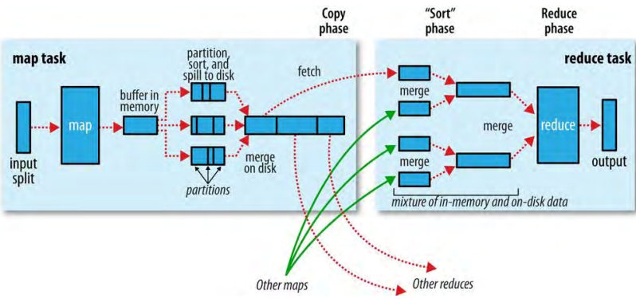

3、混洗和排序（Shuffle and Sort）
MapReduce保证每个reducer的输入是按照key进行排序的。系统执行排序——和传输map输出到reducer作为输入——的过程称为混洗（shuffle）。
3.1、Map侧（The Map Side）
当map函数开始产生输出时，它不是简单的写到磁盘，这个过程还包括并且利用内存中的缓冲写（buffering write）的优势和为了高效做一些预排序。如图：
图 7-4 Shuffle and sort in MapReduce

每个map task都有一个循环内存缓存（circular memory buffer）用来写输出。这个缓存默认100M（通过mapreduce.task.io.sort.mb属性设置）。当这个缓存的内容达到一定的阈值（mapreduce.map.sort.spill.percent，默认0.8或80%），一个后台线程会开始将内容溢出（spill）到磁盘。溢出发生时，map输出会继续写到这个缓存，但是如果缓存被填满，map会阻塞直到溢出完成。溢出内容被以循环的风格写到mapreduce.cluster.local.dir属性指定的目录中的一个job专属的子目录。
在写到磁盘之前，线程首先根据数据最终会被送到的reducers的数量将数据分区。每个分区内，后台进程执行一个在内存中的按key排序，如果存在combiner函数，那么它是在排序的输出上运行的。运行combiner函数会使map输出更紧凑，那么就有更少的数据写到本地磁盘和传到reducer。
每当内存缓存达到溢出阈值，创建一个新的溢出文件，所以在map task写完它的最后一条输出记录，可能会有几个溢出文件。在map task结束前，溢出文件会被合并到一个分区的并且是排序的输出文件。配置属性mapreduce.task.io.sort.factor控制一次合并的streams（流？？）的数量；默认值10。
如果有至少3个溢出文件（mapreduce.map.combine.minspills属性设置），combiner会在写输出文件之前再次运行。再次调用combiners可能会在输入上重复运行而不影响最终结果。如果只有一个或两个溢出文件，map输出大小的减少预期将不值得调用combiner的开销，所以不会为这个map output再次运行。
写map输出到磁盘上时最好进行压缩，这样可以写得更快、节省磁盘空间、减少传输到reducer的数据量。默认map输出是不压缩的，设置mapreduce.map.output.compress为true开启。通过mapreduce.map.output.compress.codec属性来设置压缩库。
输出文件的分区通过HTTP对reducers变得可用。服务文件分区的最大worker线程由mapreduce.shuffle.max.threads属性控制；这个设置是为每个节点管理器的，而不是为每个map task的。默认值0设置最大线程数为机器上处理器数量的两倍。
3.2、Reduce侧（The Reduce Side）
map输出文件保存在运行map task机器的本地磁盘上（尽管map输出写在本地磁盘上，reduce输出可能不是），但是在reduce阶段需要为分区运行reduce task。此外，reudce task需要集群中几个map tasks的输出的特定分区。map tasks可能在不同时间完成。reduce task在每个map task完成时开始复制的它们的输出。这是reduce task的copy phase（复制阶段）。reduce task有少数几个（默认个数5，通过mapreduce.reduce.shuffle.parallelcopies属性设置）复制线程（copier threads）可以并行获取map输出。
reducers是怎么知道从哪个机器获取map输出的呢？当map tasks成功完成，它们用心跳机制通知application master。因而，对于某个job，application master知道map输出和主机（hosts）之间的映射。reducer中的一个进程定期向application master请求输出主机直到获取所有的输出。当第一个reducer获取map输出后主机不会删除map输出，因为reducer可能会失败。只有application master通知主机删除map输出文件时，才会删除，这发生在job完成后。
如果map输出足够小（缓存大小由mapreduce.reduce.shuffle.input.buffer.percent属性控制，指定了为这一目的使用的堆的比例）就直接复制到reduce task的JVM内存中，否则就将map输出复制到磁盘。当内存中缓存达到一定阈值（由mapreduce.reduce.shuffle.merge.percent属性控制）或达到map输出的一个阈值（mapreduce.reduce.merge.inmem.threshold），在merge中会运行这个缓存以减少写到磁盘的数据量。
随着复制文件在磁盘上积累，一个后台线程把它们合并到更大的、排序的（多个）文件中。这节省一些后续合并的时间。注意，为了进行map输出合并，任何压缩的map输出都必须在在内存中进行解压。
当所有的map输出都复制完，reduce task进入sort phase（排序阶段，叫做merge phase合并阶段更合适，因为排序是在map侧进行的），在这个阶段合并map输出，维护它们的排序顺序。这个是循环进行的。例如，如果有50个map输出并且merge factor是10（mapreduce.task.io.sort.factor），会进行5轮合并。每一轮合并10个文件为一个文件，最终会有5个中间文件。最后，不会将5个中间文件合并为一个文件并写到磁盘，而是将合并结果传递给最后的阶段：reduce pahse。最后的合并可以是内存中数据和磁盘上数据的混合。
每一轮合并文件的数量事实上比这个例子要灵巧。目的是合并最少的文件，以在最终一轮合并中合并merge factor个文件。所以，如果有40个文件，合并将不是每次合并10个文件以获取4个中间文件。而是，第一轮只合并4个文件，后续三轮合并10个文件，4个中间文件和6个没有进行合并的文件（共10个文件）进行最后一轮合并。注意，这并没有改变进行合并的轮数，只是一个获取写到磁盘数据量最小的优化，因为最终一轮总是直接合并结果到reduce阶段。
在reduce阶段，为排序的输出中的每个key调用reduce函数。reduce阶段的输出直接写到输出文件系统，通常是HDFS。在使用HDFS的场合，因为节点管理器也运行一个datanode，第一个block replica会写到本地磁盘。
3.3、配置调试（Configuration Tuning）
表 7-1 Map-side tuning properties
| Property name | Type | Default value | Description |
|---|---|---|---|
| mapreduce.task.io.sort.mb | int | 100 | 排序map输出时使用的内存缓存（MB） |
| mapreduce.map.sort.spill.percent | float | 0.80 | 触发内存缓存溢出到磁盘的阈值（map输出使用的内存缓存的比例） |
| mapreduce.task.io.sort.factor | int | 10 | 排序文件时一次合并的流的最大数目。这个属性在reduce中也可以使用。把它设置为100相当常见。 |
| mapreduce.map.combine.minspills | int | 3 | （如果指定了combiner）触发combiner运行的最小溢出文件数目 |
| mapreduce.map.output.compress | boolean | false | 是否压缩map输出 |
| mapreduce.map.output.compress.codec | class name | org.apache.hadoop.io.compress.DefaultCodec | 用于map输出压缩的压缩codec |
| mapreduce.shuffle.max.threads | int | 0 | 每个节点管理器中提供map输出给reducers的工作者线程个数。这个属性是集群的，不能在单独job中设置。0意味着使用Netty默认的可用处理器的个数的两倍个数的线程。 |
表 7-1 Reduce-side tuning properties
| Property name | Type | Default value | Description |
|---|---|---|---|
| mapreduce.reduce.shuffle.parallelcopies | int | 5 | 复制map输出到reducer的线程数量 |
| mapreduce.reduce.shuffle.maxfetchfailures | int | 10 | reducer尝试获取map输出的允许的失败次数 |
| mapreduce.task.io.sort.factor | int | 10 | 排序文件时一次合并流的最大数量。这个属性在map中也可用 |
| mapreduce.reduce.shuffle.input.buffer.percent | float | 0.70 | 在混洗的复制阶段给map输出缓存分配的内存占整个堆内存的比例 |
| mapreduce.reduce.shuffle.merge.percent | float | 0.66 | 内存中的map输出缓存达到这个阈值时，启动合并map输出并溢出到磁盘的处理。这个阈值是内存中的map输出占mapreduce.reduce.input.buffer.percent属性所定义的内存大小的比例。 |
| mapreduce.reduce.merge.inmem.threshold | int | 1000 | |
| mapreduce.reduce.input.buffer.percent | float | 0.0 | 在reduce阶段中用于保存map输出的内存占整个堆内存的比例。为了启动reduce阶段，内存中map输出的大小必须小于这个百分比。默认情况下，所有的map输出在reduce开始前都合并到磁盘，以给reducer尽可能多的内存。可是，如果reducer需要较少的内存，可以增加这个百分比设置，以减少合并到磁盘的map输出的量。 |
一般原则是给混洗尽可能多的内存。可是，有一个权衡，要确保map和reduce函数有足够的内存运行。这就是最好使map和reduce函数使用尽可能少内存的原因——当然它们不能使用无限定量的内存（例如避免在map中使用累积值）。
给予运行map和reduce task的JVM的内存的量通过mapred.child.java.opts属性设置。应该确保这个值尽可能和task节点上的内存一样大。
在map侧，通过避免多重溢出到磁盘（一个最佳）可以获得最佳的性能。如果可以估计map输出的大小，可以设置_mapreduce.task.io.sort.**属性来使溢出最小化。特别是，如果可以，应该增加_mapreduce.task.io.sort.mb*。有一个MapReduce counter（SPILLED_RECORDS）计数在job过程中溢出到磁盘的记录总数。注意，这个counter包含了map侧和reduce侧的溢出。
在reduce侧，当中间数据全部都在内存中时能够获得最佳性能。默认情况下不会发送这种情况，因为常见的清形是所有的内存都保留以用于reduce函数。但是如果reduce函数内存需求很少，设置mapreduce.reduce.merge.inmem.threshold为0并且mapreduce.reduce.input.buffer.percent为1.0（或者一个稍小的值）可能会带来性能的爆发。
一般地，Hadoop默认使用4KB的缓存，很少，应该增加集群中的这个值（通过设置io.file.buffer.size）。